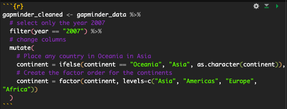

# A tibble: 5 × 2
name height
<chr> <int>
1 Luke Skywalker 172
2 C-3PO 167
3 R2-D2 96
4 Darth Vader 202
5 Leia Organa 150Week 2 - STEM 691
Data Viz & R Basics
Dr. Kelly Boles
Weekly Check In
Start Recording
Today’s Agenda
- Weekly Check In
- Norms
- Creating R Project for This Class
- Working with R Markdown
tidyverseIntroductiondplyrBasicsggplot2Preview
tidykidsScavenger Hunt- Looking Ahead
Norms
| In person norms | And also, for online learning… |
|---|---|
| Be fully present to each other & the work. | Keep your video on when possible. In large groups, mute your microphone when not talking. Close/mute/minimize other apps and devices to avoid distraction. |
| Assume positive intent & also take responsibility for the impact you have. | Remember online interaction masks even more of the full story. Notice when you are making assumptions, and seek information to check them. |
| Embrace collaboration. | Use the gallery view so you can see everyone. Use breakout groups as an opportunity to collaborate. |
| Be open to learning and accept non-closure. | Expect the inevitable technical glitches and learning curves. Exercise patience with one another. |
| Be aware of when to step up and step back. When stepping back, do so as an active listener. | Try out different modes of participation. Step back by making space for others to engage in these. |
| Land your plane–get to the point you intended. | We all know how hard it is to be talked at, especially in a Zoom session, so let’s keep it to a minimum. |
R Markdown
Creating an R Project
- If you haven’t already, let’s create an R Project for this class.
- I use
Week-1,Week-2, etc. subfolders.
R Markdown
- R Markdown is a file format for making dynamic documents with R.
- An R Markdown document is written in markdown (a plain text format) and contains chunks of embedded R code.
- The markdown file is then processed by
knitr, and then pandoc which converts the markdown to a PDF, Word, or HTML file. - File extension:
.Rmd
R Markdown - Plain Text

Plain Text in .Rmd

Plain Text Formatting
R Markdown - Plain Text - Activity
- In Canvas you will find an activity called
R Markdown: In-Class Activity - It should open up another page with instructions.
- There is file to download in the opening step. Download it and put it in your
Week-2folder within your R Project.
R Markdown - Code Chunks
- The other part of an R Markdown document is the code chunks.

Code Chunk in a .Rmd
- {r echo = T} : shows the code when knitted
- {r eval = F} : code does not run
- {r message = F}: hides messages
- {r warning = F}: hides warnings
R Markdown - Knitting Errors
- When Rmd fails to knit, it will tell you which chunk the error is in:

Error in lines 17-18
R Markdown
- Most of your homework will be submitted as R Markdown files.
- Including this week’s!
tidyverse Intro
dplyrggplot2
dplyr Basics
dplyr Basics
- Code-a-long
- In chat: What is a function?
dplyr Basic Functions
select()
Example df - starwars
| name | height | mass | hair_color | skin_color |
|---|---|---|---|---|
| Luke Skywalker | 172 | 77 | blond | fair |
| C-3PO | 167 | 75 | NA | gold |
| R2-D2 | 96 | 32 | NA | white, blue |
| Darth Vader | 202 | 136 | none | white |
| Leia Organa | 150 | 49 | brown | light |
select(name, height)
- Use this to select columns/variables
dplyr Basic Functions
select()
Example df - starwars
| name | height | mass | hair_color | skin_color |
|---|---|---|---|---|
| Luke Skywalker | 172 | 77 | blond | fair |
| C-3PO | 167 | 75 | NA | gold |
| R2-D2 | 96 | 32 | NA | white, blue |
| Darth Vader | 202 | 136 | none | white |
| Leia Organa | 150 | 49 | brown | light |
Why the same?
dplyr Basic Functions
Pipe Operator:
%>% or |>
The pipe operator connects functions together into a chain of step-by-step commands. It can be translated as and then.
In English:
- Take the starwars data set and then
selectthe name and height columns and thenviewthe result in R Studio
dplyr Basic Functions
filter()
Example df - starwars
| name | height | mass | hair_color | skin_color |
|---|---|---|---|---|
| Luke Skywalker | 172 | 77 | blond | fair |
| C-3PO | 167 | 75 | NA | gold |
| R2-D2 | 96 | 32 | NA | white, blue |
| Darth Vader | 202 | 136 | none | white |
| Leia Organa | 150 | 49 | brown | light |
dplyr Basic Functions
filter()
Example df - starwars
| name | height | mass | hair_color | skin_color |
|---|---|---|---|---|
| Luke Skywalker | 172 | 77 | blond | fair |
| C-3PO | 167 | 75 | NA | gold |
| R2-D2 | 96 | 32 | NA | white, blue |
| Darth Vader | 202 | 136 | none | white |
| Leia Organa | 150 | 49 | brown | light |
dplyr Basic Functions
filter()
Example df - starwars
| name | height | mass | hair_color | skin_color |
|---|---|---|---|---|
| Luke Skywalker | 172 | 77 | blond | fair |
| C-3PO | 167 | 75 | NA | gold |
| R2-D2 | 96 | 32 | NA | white, blue |
| Darth Vader | 202 | 136 | none | white |
| Leia Organa | 150 | 49 | brown | light |
dplyr Basic Functions
str()
Example df - starwars
| name | height | mass | hair_color | skin_color |
|---|---|---|---|---|
| Luke Skywalker | 172 | 77 | blond | fair |
| C-3PO | 167 | 75 | NA | gold |
| R2-D2 | 96 | 32 | NA | white, blue |
| Darth Vader | 202 | 136 | none | white |
| Leia Organa | 150 | 49 | brown | light |
str(starwars)
- Use this to see the structure of an object
tibble [5 × 5] (S3: tbl_df/tbl/data.frame)
$ name : chr [1:5] "Luke Skywalker" "C-3PO" "R2-D2" "Darth Vader" ...
$ height : int [1:5] 172 167 96 202 150
$ mass : num [1:5] 77 75 32 136 49
$ hair_color: chr [1:5] "blond" NA NA "none" ...
$ skin_color: chr [1:5] "fair" "gold" "white, blue" "white" ...dplyr Basic Functions
head()
Example df - starwars
| name | height | mass | hair_color | skin_color |
|---|---|---|---|---|
| Luke Skywalker | 172 | 77 | blond | fair |
| C-3PO | 167 | 75 | NA | gold |
| R2-D2 | 96 | 32 | NA | white, blue |
| Darth Vader | 202 | 136 | none | white |
| Leia Organa | 150 | 49 | brown | light |
head(starwars)
- Use this to see the first n rows of an object
# A tibble: 5 × 5
name height mass hair_color skin_color
<chr> <int> <dbl> <chr> <chr>
1 Luke Skywalker 172 77 blond fair
2 C-3PO 167 75 <NA> gold
3 R2-D2 96 32 <NA> white, blue
4 Darth Vader 202 136 none white
5 Leia Organa 150 49 brown light # A tibble: 2 × 5
name height mass hair_color skin_color
<chr> <int> <dbl> <chr> <chr>
1 Luke Skywalker 172 77 blond fair
2 C-3PO 167 75 <NA> gold dplyr Basic Functions
rename()
Example df - starwars
| name | height | mass | hair_color | skin_color |
|---|---|---|---|---|
| Luke Skywalker | 172 | 77 | blond | fair |
| C-3PO | 167 | 75 | NA | gold |
| R2-D2 | 96 | 32 | NA | white, blue |
| Darth Vader | 202 | 136 | none | white |
| Leia Organa | 150 | 49 | brown | light |
rename("weight" = mass)
- Use this to rename a column
dplyr Basic Functions
mutate()
Example df - starwars
| name | height | mass | hair_color | skin_color |
|---|---|---|---|---|
| Luke Skywalker | 172 | 77 | blond | fair |
| C-3PO | 167 | 75 | NA | gold |
| R2-D2 | 96 | 32 | NA | white, blue |
| Darth Vader | 202 | 136 | none | white |
| Leia Organa | 150 | 49 | brown | light |
dplyr Basic Functions
mutate() mutate() A Challenge!
starwars |>
mutate(one = height^2) |>
mutate(two = height*mass) |>
mutate(hair_color = ifelse(is.na(hair_color),
"unknown", hair_color))# A tibble: 5 × 7
name height mass hair_color skin_color one two
<chr> <int> <dbl> <chr> <chr> <dbl> <dbl>
1 Luke Skywalker 172 77 blond fair 29584 13244
2 C-3PO 167 75 unknown gold 27889 12525
3 R2-D2 96 32 unknown white, blue 9216 3072
4 Darth Vader 202 136 none white 40804 27472
5 Leia Organa 150 49 brown light 22500 7350dplyr Basic Functions
mutate() mutate() A Challenge!
starwars |>
mutate(one = height^2,
two = height*mass,
hair_color = ifelse(is.na(hair_color),
"unknown", hair_color))# A tibble: 5 × 7
name height mass hair_color skin_color one two
<chr> <int> <dbl> <chr> <chr> <dbl> <dbl>
1 Luke Skywalker 172 77 blond fair 29584 13244
2 C-3PO 167 75 unknown gold 27889 12525
3 R2-D2 96 32 unknown white, blue 9216 3072
4 Darth Vader 202 136 none white 40804 27472
5 Leia Organa 150 49 brown light 22500 7350ggplot2 Preview
ggplot2 Preview
ggplot2orggplotis most popular data viz package in R.- Part of the
tidyverse - We’ll learn more in Week 4, but you’ll have a preview in this week’s homework.
PalmerPenguins Scavenger Hunt
UTK Educational Data Science